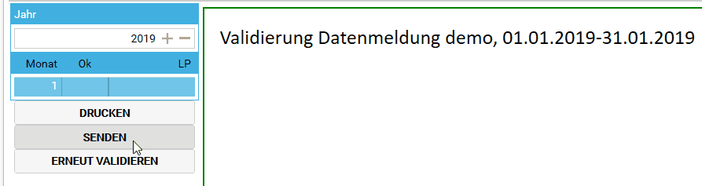
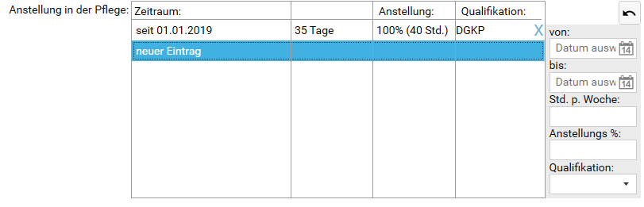

connexia
monatliche Meldung
Die monatliche Datenmeldung an connexia erfolgt ab 01.01.2019 direkt in transdok
- Programmbereich
connexiaMenüpunktDatenmeldungwählen Angezeigte Fehler müssen behoben werden
Auf
sendenklicken. Alle Meldungen müssen ‘grün’ sein. Gibt es einen ‘roten’ Eintrag, dann wählen Sie diesen aus, klicken auf
erneut validieren, beheben ggf. die Fehler und klicken dann aufsenden.
Anstellungsverhältnis
Neu zu erfassen sind das Anstellungsverhältnis in der Pflege. Dies kann im Programmbereich Verwaltung Menüpunkt Mitarbeiter und Stammdaten eingetragen werden. Wählen Sie neuer Eintrag aus.

Wenn Sie nicht den gesamten Verlauf der Dienstverhältnisse erfassen können oder wollen, geben Sie 01.01.2019 als von-Datum an und erfassen Sie die Werte ab diesem Zeitpunkt.
Datenabgleich (alt)
Der Datenabgleich ist ab 01.01.2019 nur noch für Vereine notwendig, welche ihre Selbstbehalte im alten System verrechnen. Der Abgleich erfolgt im Programmbereich connexia beim Menüpunkt Datenabgleich beim Register exportieren. Die Daten sollten möglichst regelmäßig (zumindest alle paar Tage) abgeglichen werden.